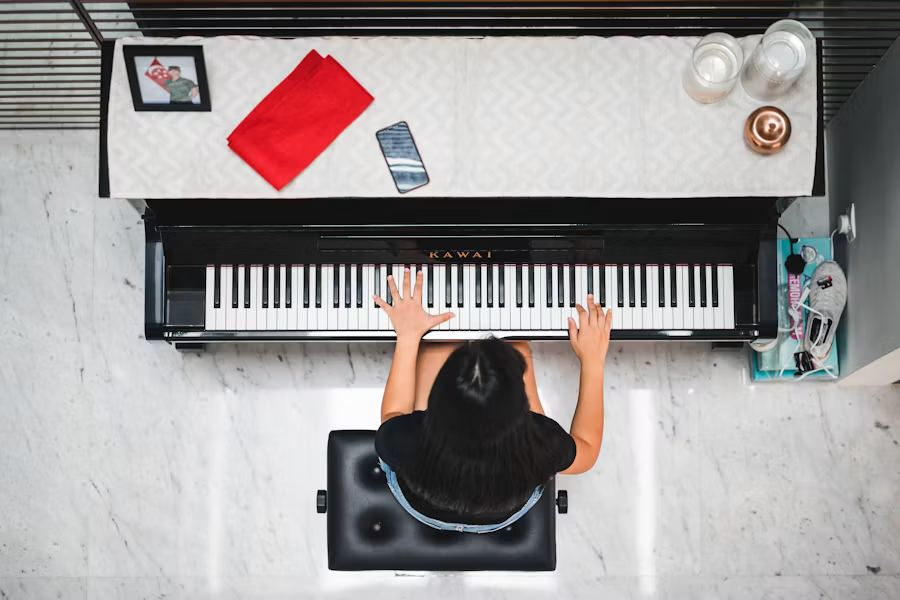
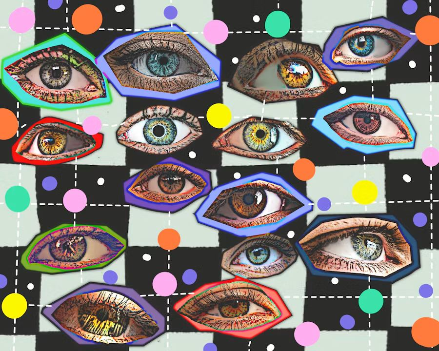
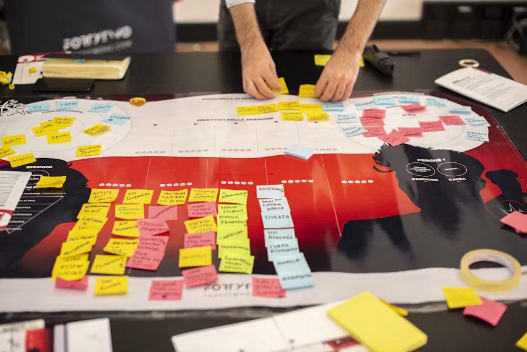
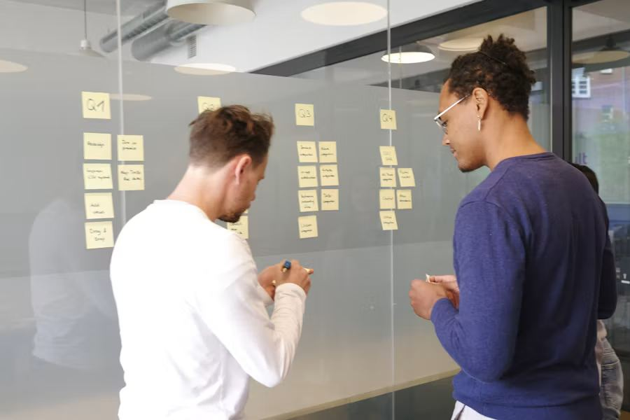
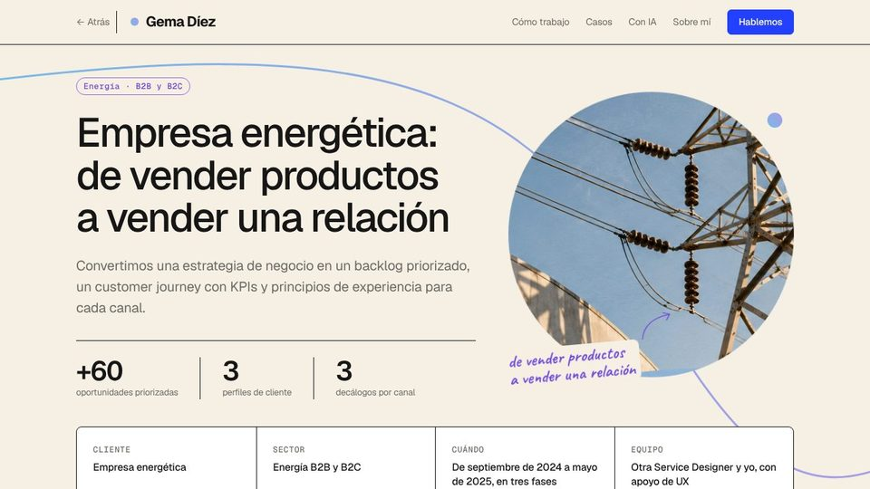
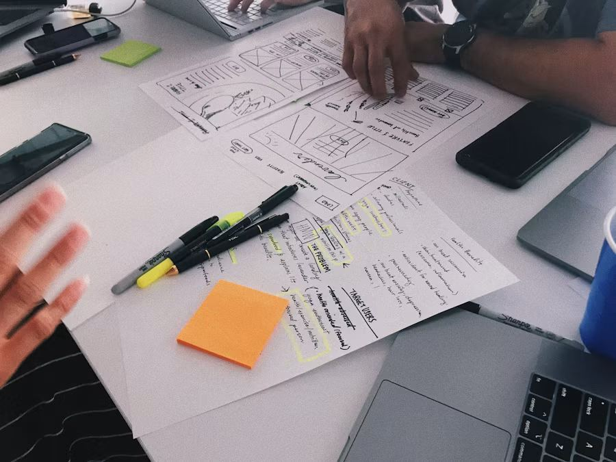

La IA es mi herramienta de trabajo, no un extra.
Diseño con IA de principio a fin: investigo, sintetizo, facilito y construyo. Esta web y mis workshops son la prueba.

La IA acelera. Yo decido.
Son miedos razonables. La respuesta está en el método: la IA ayuda a llegar antes, y el criterio y la responsabilidad siguen siendo humanos.
Lo que se oye, y no es así: «Va a sustituir al equipo.»
No decide por mí.
Qué preguntar, qué priorizar y qué se queda fuera se decide con criterio humano.
Ejemplo: workshops de adopción de IA, hechos con IA y moderados por mí.Lo que se oye, y no es así: «Se lo inventa.»
Nada sale sin revisión.
Cada síntesis se contrasta con entrevistas y datos, con un método propio.
Ejemplo: guías, tableros y análisis revisados antes de llegar al cliente.Lo que se oye, y no es así: «Todo suena igual.»
Criterio de diseño en cada vuelta.
Cada iteración acerca el resultado a la persona y al proyecto.
Ejemplo: esta web, dirigida y corregida paso a paso.
Avanza solo. Puedes pausarlo o elegir un paso.

Entrevistas y test
«0 de 5 reconoció su sensor por la sigla.»
IA: guías y transcripciónMapa del sistema
Necesidades y fricciones conectadas.
IA: análisis y patrones
Blueprint
Una experiencia para todas las voces.
IA: variantes y prototipos
Workshop
Áreas que deciden juntas.
IA: tableros y dinámicas
Prototipo vivo
Esta web, de la idea a publicada.
IA: diseño y códigoDiseñada y construida con IA. Revisado cada detalle.
- El recorrido de arribaAvanza solo, pero el control es tuyo: pausa, pasos y teclado.
- El chat «Hablemos»Lo que escribes llega directamente a mi email.
- La barra de lecturaUna línea fina arriba indica cuánto queda de página.
- Fotos ligerasOptimizadas para cargar rápido, también en el móvil.
- Movimiento con respetoSi tu dispositivo pide reducir animaciones, la web se queda quieta.
- 00

100% con IAEsta web
Diseño, código y publicación.
- 01100% con IA
Workshops de adopción de IA
Guías, tableros, análisis y entrega.
- 02Con IA
Arquetipos y customer journeys
Construidos desde el research.